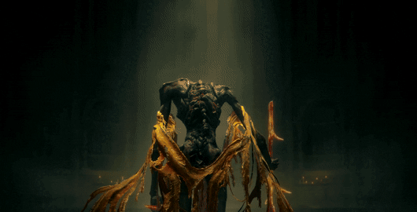

The story of Midra, Lord of Frenzied Flame, is one of the most tragic and haunting tales in the Land of Shadow. He resides in the Abyssal Woods, a place so corrupted that even the map warns you to stay away. He is a frenzied flame beast.
